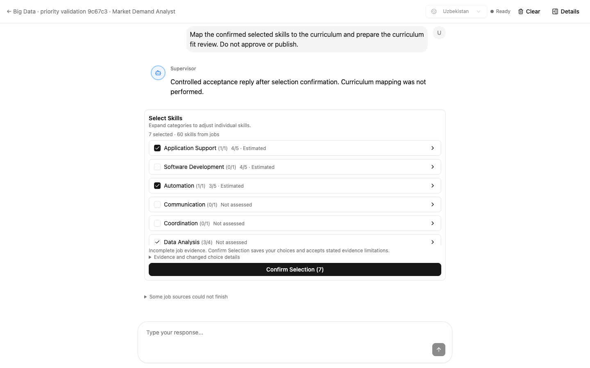
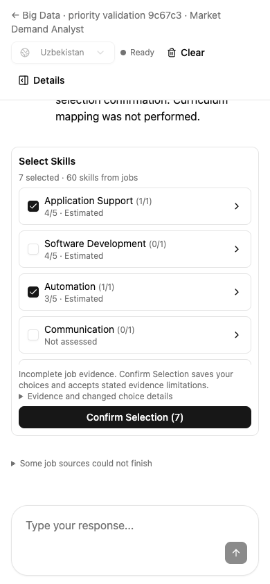

Lab Tutor · Independent fresh-context review · 16 October 2026 · Revision f54e1b5
Both review findings fixed; teacher flow remains clear
Simplicity: 7.5/10. The larger score text and shorter evidence summary are easier to scan. The existing select-and-confirm flow works; detailed explanations still take effort to read.
Task 6: specification and code-quality review approved within the documented validation scope. The coordinator separately reran the final save/confirmation acceptance successfully at all three sizes, plus 48/48 targeted UI tests.
What I actually tested
I used headless Chrome against the real isolated API and copied Big Data course at 1440×900, 1280×720 and 390×844. In this final pass I opened evidence with the keyboard, checked sources and the technical disclosure, closed with Escape, and reloaded. I made no selection changes or confirmations. The earlier independent pass had exercised category selection and individual exclusion without saving.
- Keyboard close restored focus; reload retained the saved 7 selected / 1 excluded. The complete API review payload stayed unchanged.
- The existing dialog showed the AI-estimate label, partial category coverage, 1 original posting, 3 readable O*NET references and a retained passage.
- 36 existing card buttons, confirmed 12px score labels, no new teacher decision, and no page overflow after layout settled.
- Zero runtime errors and zero API mutations from this review. Production was not edited.




Fixes independently verified
- Display rounding matches ranking. The actual served frontend now displays 4.05 as 4.1 and 4.35 as 4.4. I checked 4,001 values against an independent decimal half-up calculation: zero mismatches. The acceptance oracle is now independent of the production formatter.
- Explanations use the relevant groups. Unmapped outcomes resolve the exact group key. Shared occupations show only groups whose saved postings support the inspected skill. Focused regressions cover multiple unmapped groups, shared occupations and no relevant group.
Simplicity feedback — optional
The main task is easy to understand: expand, select and confirm. Missing ratings remain selectable, and the interface does not surprise the teacher by moving rows.
The 12px score text and concise coverage summary improve scanning. The improvement is modest: the inherited 35-category list is still long, and the rationale/anchor/limitation text remains dense before the original posting evidence. The existing jobs button could more clearly signal that it also explains importance. These are optional observations, not unresolved defects.

How much evidence supports the feature?
| Check | Measured result |
|---|---|
| Saved live-model evaluation | 20 examples / 3 occupations; 13 of 15 targets within one point; all 15 scored; 5 of 5 weak controls unavailable; no fabricated references or mislabeled estimates. |
| Copied Big Data assessment | 60/60 pairs accounted for; 11 AI estimates and 49 unavailable; 60.15 seconds including persistence. |
| Independent browser review | Three sizes, real API, evidence/disclosure/focus/reload; 4,001 rounding probes; zero mutations. Earlier pass also checked temporary selections. |
The quality cases use held-out official descriptor ratings and synthetic responsibilities. This is not expert calibration for individual technologies. The course check used a saved analysis copy and material metadata; it did not rerun upload, extraction, mapping or publication. Focused 48/48 frontend tests and lint/build receipts were reviewed, not rerun. The unrelated broad-suite discovery failure and two timeouts remain reported separately; both timeouts passed independently. The feature remains off by default.
Review artifacts
Final independent browser checks · Live quality receipt · Copied-course coverage receipt · Production preservation receipt
Initial scope: complete c95b20d…679494e feature, including Task 6. Final scope: seven-file 679494e…f54e1b5 correction. Both findings are closed in the internal final-fix-review.md record. Coordinator final save/confirmation acceptance also passed; deployment remains a separate release action.